Префектура Киото · Удзи · храмы и чай
Удзи: храм Бёдо-ин, древнейшее святилище Японии и обед из маття у реки
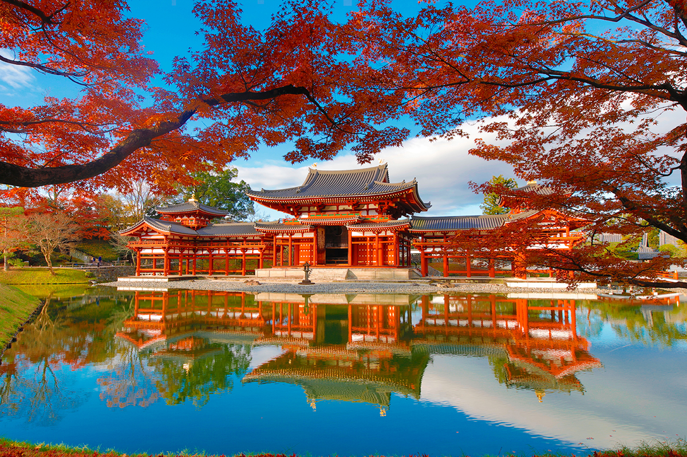
Удзи лежит за пределами Киото, но именно здесь стоят два памятника из списка Всемирного наследия, здесь разворачиваются последние главы «Повести о Гэндзи» и здесь растёт один из самых знаменитых чаёв Японии. Пройдём по городу эпох Хэйан и Камакура от храма к святилищам и закончим обедом, где маття едят, а не только пьют.
Город
Удзи: дачи знати на берегу реки
Если от Фусими на юге Киото ехать дальше на юг и немного свернуть на восток, попадёшь в Удзи. Формально это уже не Киото: Удзи отдельный город в той же префектуре. Здесь чуть прохладнее, чем в столице, климат мягкий, и в старину знать строила здесь загородные усадьбы.
Сердце Удзи это квартал вокруг моста Удзи через одноимённую реку. Два памятника Всемирного наследия, храм Бёдо-ин и святилище Удзигами, стоят друг напротив друга на разных берегах. Оба входят в объект ЮНЕСКО «Памятники древнего Киото», пятый японский объект в этом списке.
Рядом стоит памятник Мурасаки Сикибу, автору «Повести о Гэндзи». Последние десять глав романа, от «Девы у моста» до «Плавучего моста снов», называют «десятью главами Удзи»: их действие происходит именно здесь.
Бёдо-ин
Зал Феникса: рай на земле
Даже те, кто не был в Бёдо-ин, видели его зал Феникса: симметричный силуэт павильона изображён на японской монете в 10 иен. Меньше известно, что феникс с его крыши попал и на оборот банкноты в 10 000 иен образца 2004 года.
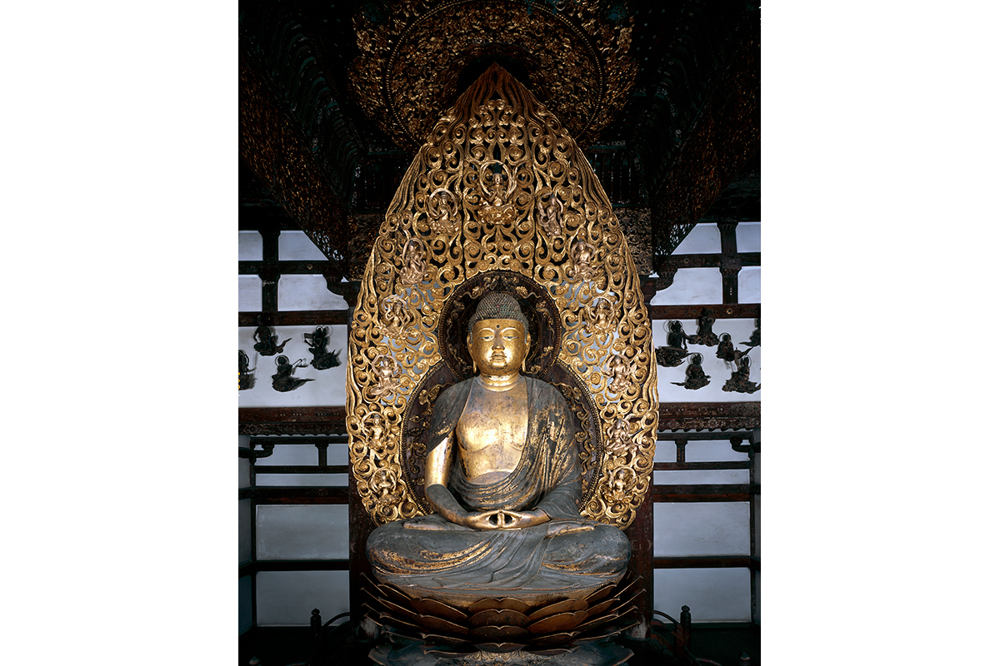
Начиналось всё с загородной усадьбы «Удзи-доно». Ею владел Фудзивара-но Митинага (966–1028), регент, самый могущественный человек при дворе своего времени. После его смерти сын, Фудзивара-но Ёримити (992–1074), в 1052 году превратил усадьбу в храм и назвал его Бёдо-ин.
В то время в Японии верили в учение о «конце Закона»: через две тысячи лет после ухода Будды мир охватят стихийные бедствия и смуты. Зал, который тогда называли залом Амиды, посвятили Будде Амиде, владыке Западного рая Чистой земли. Люди искали спасения, и храм быстро стал знаменит. Бёдо-ин, будто сошедший с картин рая, почитала не только знать, но и простой народ.
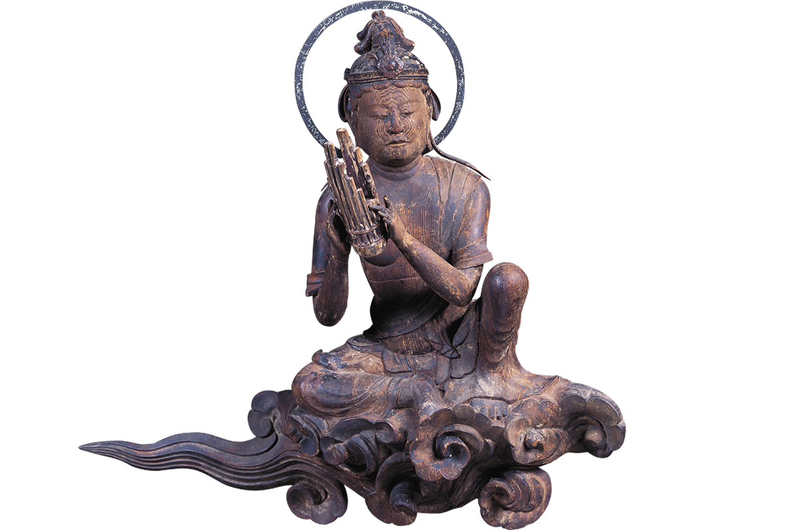
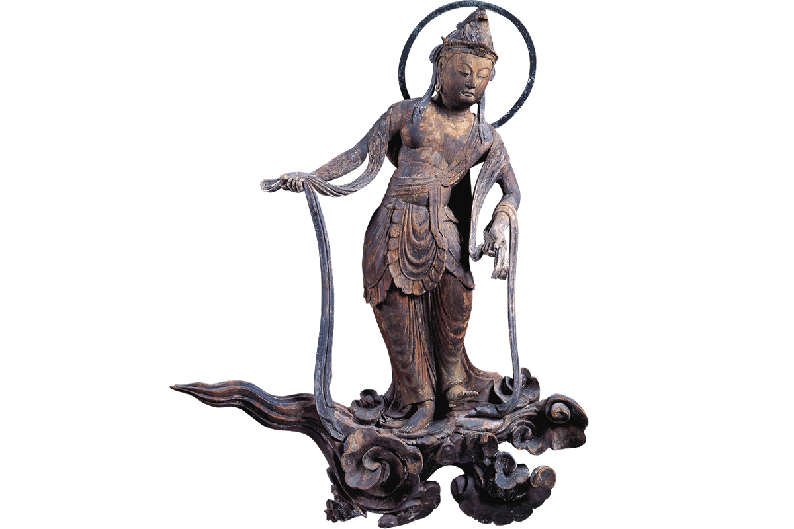
Сад Чистой земли
Осенью по всему саду вспыхивают клёны, и зал Феникса, будто плывущий по воде, становится ещё ярче. Это самый старый из сохранившихся садов Чистой земли, он сложился в эпоху Хэйан. Зал, пруд, река Удзи и горы на том берегу задуманы как одна картина: так знать представляла себе рай.
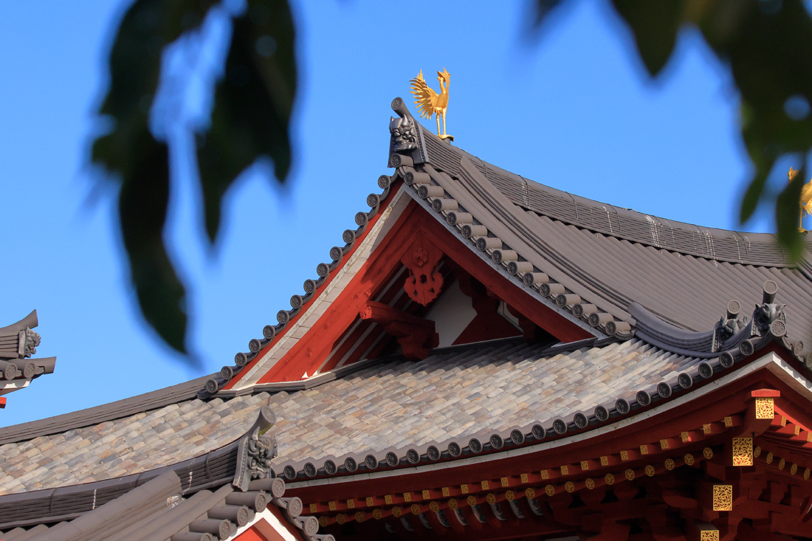
На такой сад положено смотреть с востока, и лучше всего он в утреннем свете. Ради этого стоит встать пораньше.
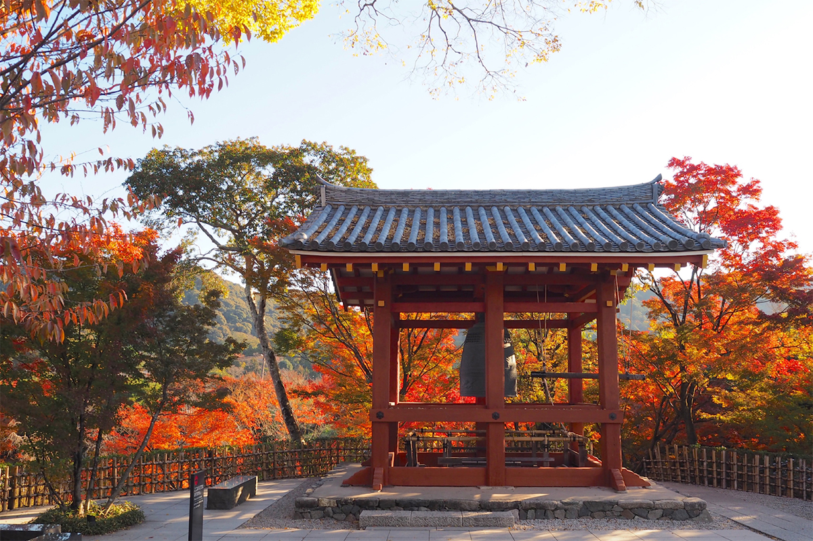
Музей
Хосёкан: второй Бёдо-ин под землёй
Музей храма называют вторым Бёдо-ин. Его построили в 2001 году вместо обветшавшей сокровищницы. Чтобы здание не спорило с залом Феникса и садом, большую часть музея спрятали в полуподвал, но дневного света внутри много, и сама архитектура тоже заслуживает внимания.
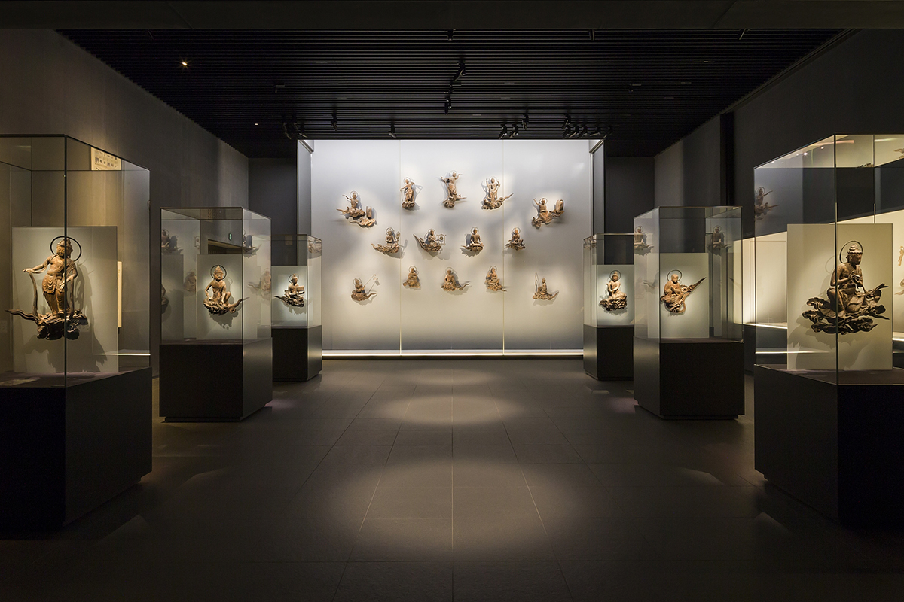
В подземных залах вблизи видны национальные сокровища: первый колокол, первые фениксы с крыши и бодхисаттвы на облаках, которые будто парят в небе. Выйти отсюда под впечатлением от такого количества сокровищ и потом надолго застрять в музейном магазине наверху вполне естественно.
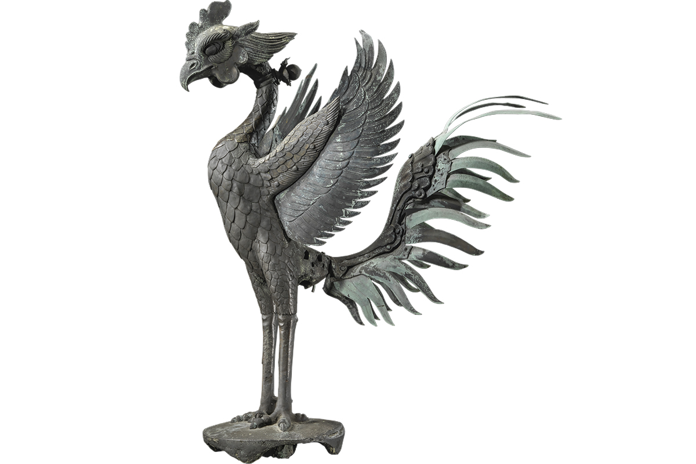
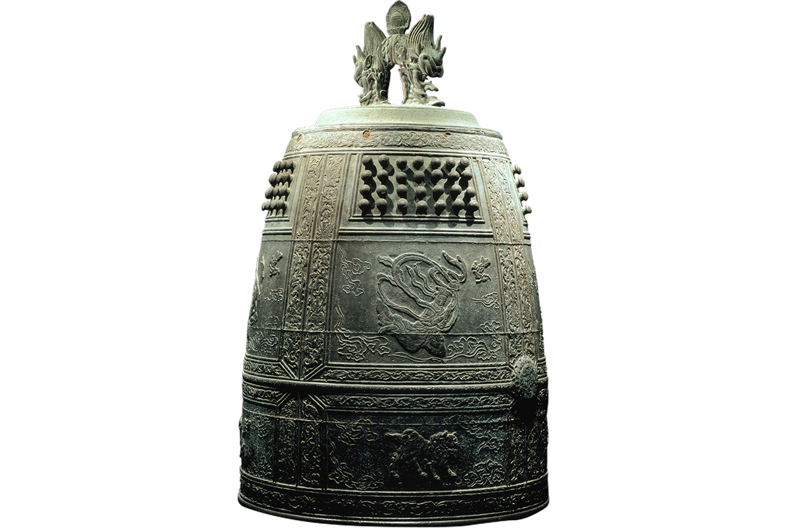
Храм Бёдо-ин
- Адрес
- префектура Киото, Удзи, Удзи-Рэнгэ, 116
- Телефон
- +81 774-21-2861
- Часы работы
- сад 8:30–17:30 (вход до 17:15); музей Хосёкан 9:00–17:00 (вход до 16:45); зал Феникса изнутри 9:30–16:10, группы по 50 человек, билеты с 9:00, пока не закончатся
- Выходные
- сад и музей без выходных, осмотр зала изнутри иногда закрывают из-за церемоний
- Цены / Вход
- сад и музей 600 иен для взрослых, зал Феникса изнутри 300 иен
- Сайт
- byodoin.or.jp
Чай
«Сабо Тока»: чай Удзи в саду храма
Удзи окружён горами, и на их склонах выращивают чай. Чай Удзи одна из самых известных марок Японии, а маття из Удзи так любят, что он стал чуть ли не символом Киото: его взбивают для чайной церемонии, добавляют в традиционные сладости и в десерты.
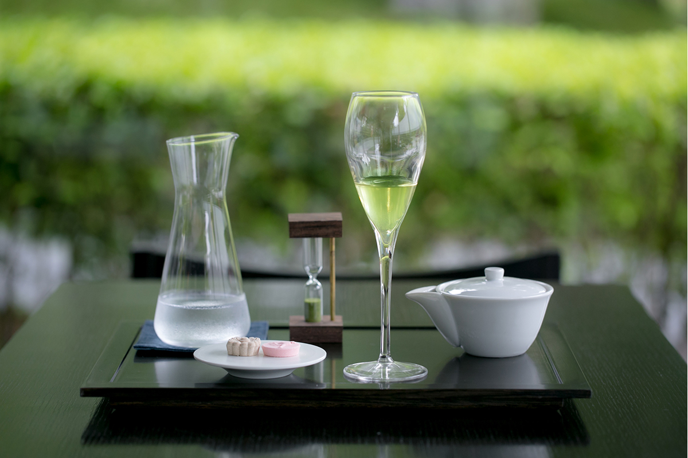
Японский чай кажется привычным, но вкус сильно зависит от того, как его заварить. Передохнуть стоит в «Сабо Тока», чайной на территории Бёдо-ин, открытой в 2014 году. Здесь смешивают листья с чайных плантаций Удзи и окрестностей в собственные купажи и подают их как гёкуро, сэнтя или маття. Правильно заваренный чай удивляет ароматом и глубиной вкуса.
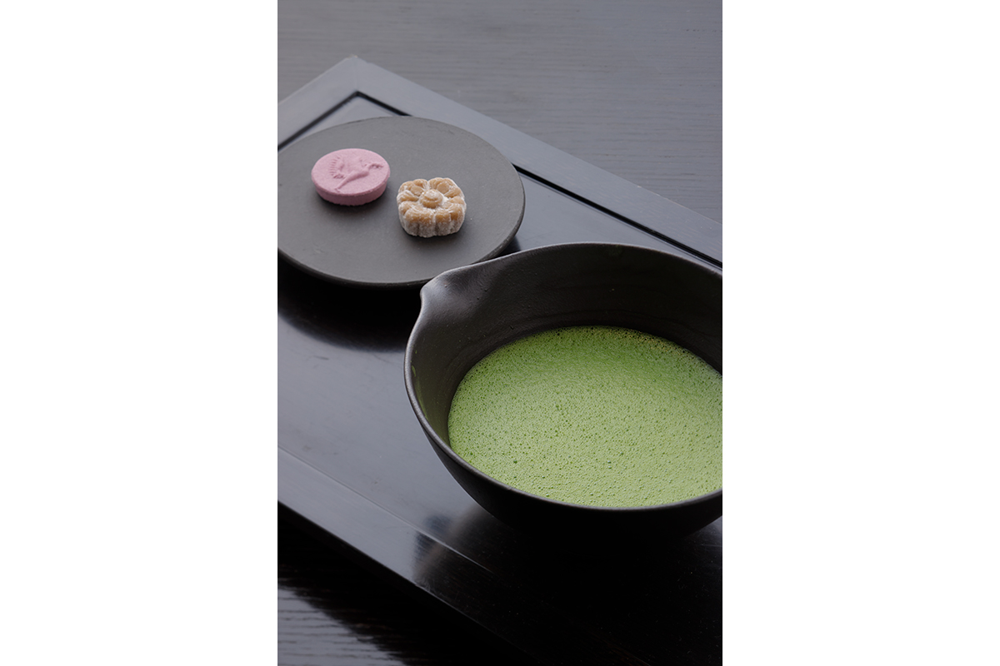
«Сила чая Удзи в искусстве купажа. Здесь много чайных хозяйств и есть мастера, которые знают сильные стороны каждого»
инструктор японского чая в «Сабо Тока»
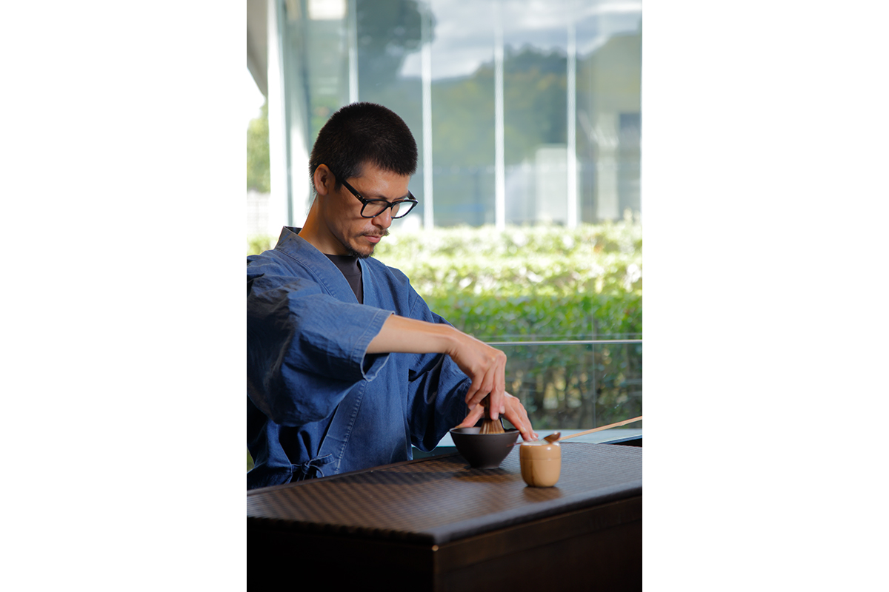
«Сабо Тока»
- Адрес
- на территории храма Бёдо-ин, префектура Киото, Удзи, Удзи-Рэнгэ, 116
- Часы работы
- 10:00–16:30 (последний заказ в 16:00)
- Выходные
- понедельник, вторник, среда (в праздники открыто, возможны изменения)
Гэндзи
Удзи в «Повести о Гэндзи»
Мурасаки Сикибу (около 973–1014), придворная дама эпохи Хэйан, написала «Повесть о Гэндзи». Это 54 главы, и роман считают самым старым большим романом Японии. Его читают по всему миру: принц Гэндзи, любовь, борьба за власть и страсти хэйанской знати описаны в нём удивительно живо.
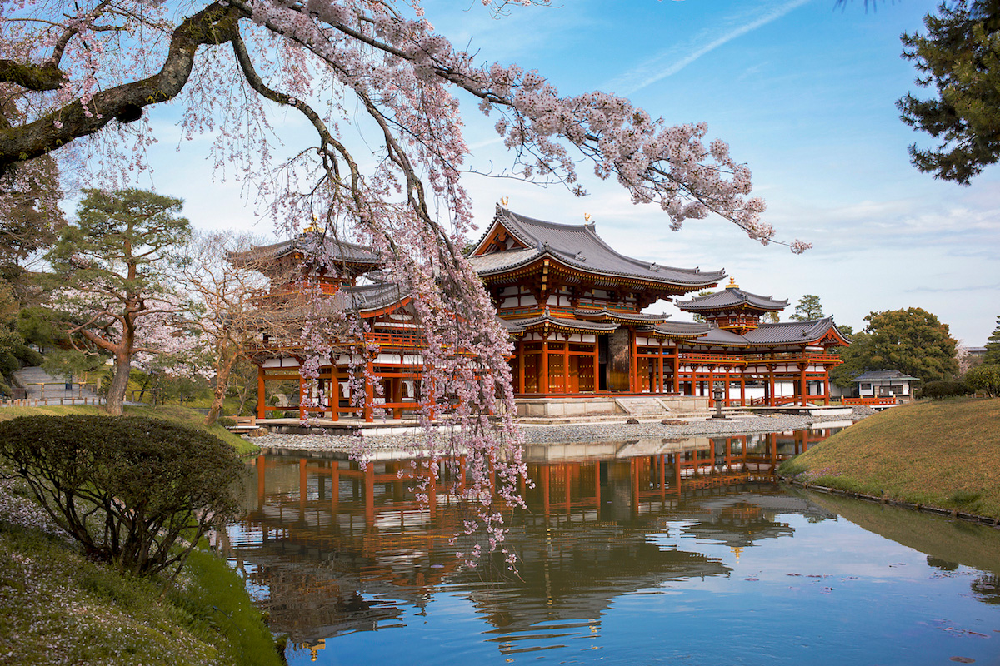
В самом Киото с романом связано немало мест, но его кульминацию, «десять глав Удзи», невозможно представить без этого города и без Бёдо-ин. Главы от «Девы у моста» до «Плавучего моста снов» рассказывают печальную историю любви: сын Гэндзи Каору и его внук Ниоу любят одну девушку, Укифунэ. Пройдитесь по берегу реки Удзи, вспоминая этот сюжет.
У Бёдо-ин долгая история и до храма. Усадьбу построил Минамото-но Тору (822–895), сын императора Сага, которого считают прототипом Гэндзи. Потом она переходила из рук в руки, в том числе к императору, пока не стала усадьбой Митинаги «Удзи-доно». Храм, похожий на западный рай, лучшее место для печального финала романа.
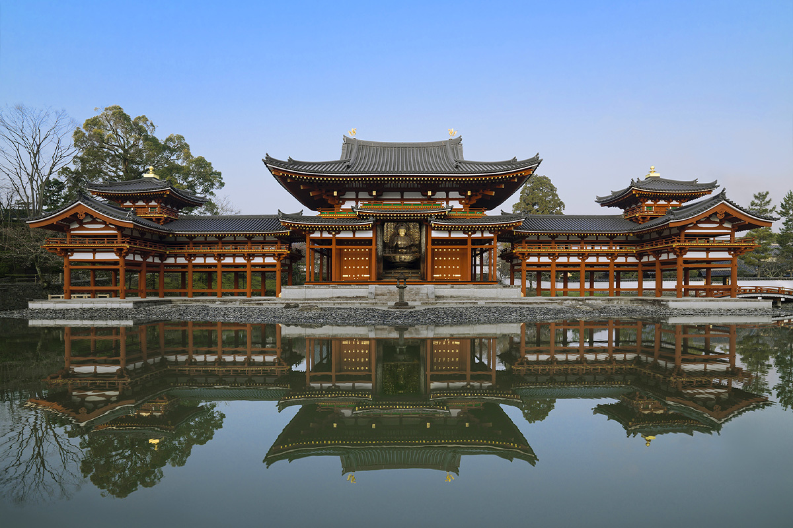
Святилища
Удзигами и Удзи: на другом берегу
Святилище Удзигами: самое старое здание святилища в Японии
Святилище Удзигами внесено в список Всемирного наследия вместе с Бёдо-ин. Его главный зал построен в эпоху Хэйан, около 1060 года, и это самое старое сохранившееся здание синтоистского святилища в Японии, национальное сокровище. Молельный зал перед ним построили чуть позже, в эпоху Камакура, и он тоже национальное сокровище.
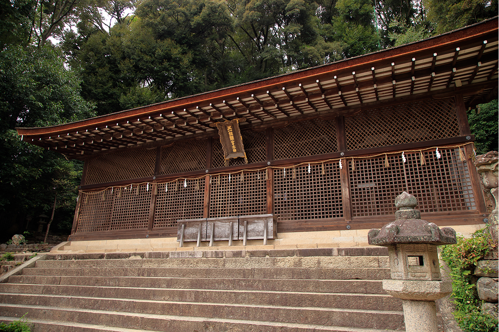
По преданию, святилище построил Ёримити в то же время, что и храм, как хранителя Бёдо-ин. Поэтому они и стоят друг против друга: обратите внимание, как они расположены. Здесь почитают императора Одзина, принца Удзи-но Вакиирацуко и императора Нинтоку. Ворота похожи на вход в маленький горный храм, за ними прямо впереди молельный зал эпохи Камакура, а дальше главный зал.
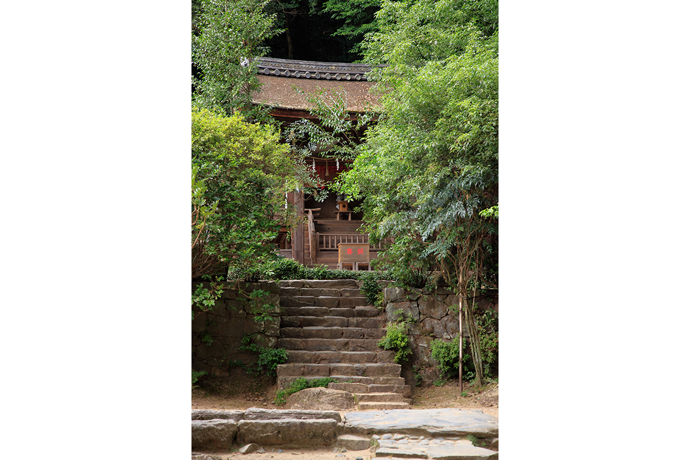
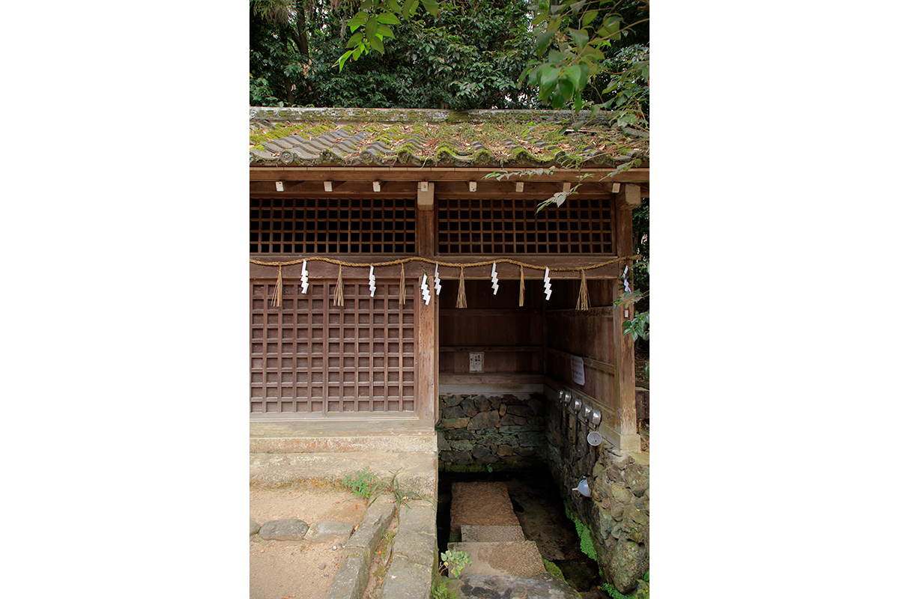
Святилище Удзигами
- Адрес
- префектура Киото, Удзи, Удзи-Ямада, 59
- Телефон
- +81 774-21-4634
- Часы работы
- 9:00–16:20
- Цены / Вход
- бесплатно
Святилище Удзи и заяц, который оглядывался
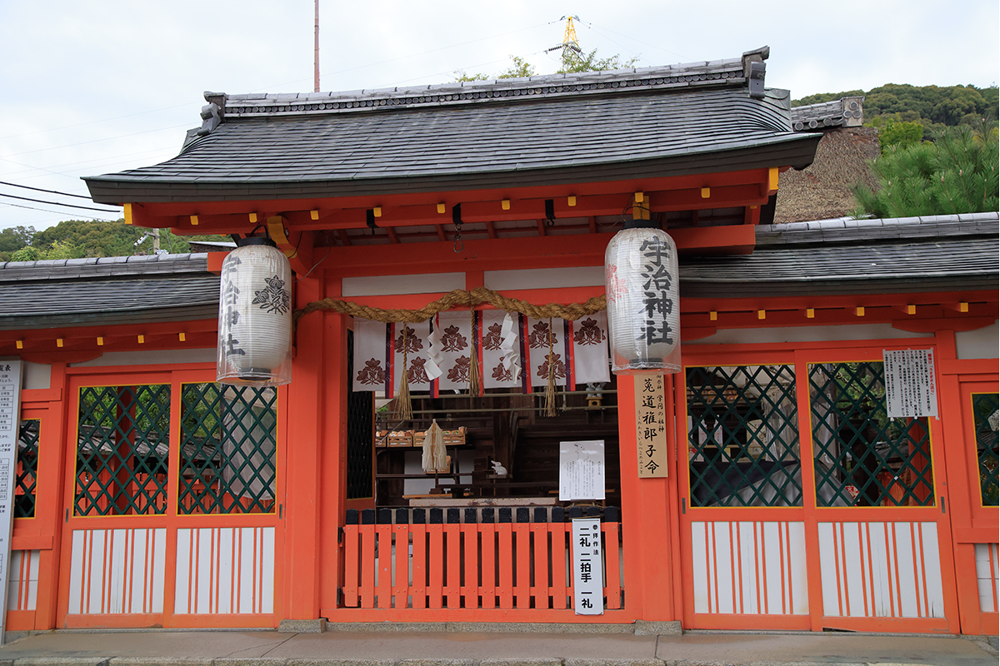
Святилище Удзи старше Удзигами: его основали в 313 году. Раньше оба были одним целым, Удзи считалось нижним святилищем, и местные жители и сегодня почитают его как покровителя родной земли. Стоит оно там, где, по преданию, был дворец принца Удзи-но Вакиирацуко.
С ним связана легенда о «зайце, который оглядывается». Принц ехал из Кавати, нынешней Осаки, в Удзи и заблудился. Дорогу ему показал заяц, который бежал впереди и всё время оглядывался. От этого будто бы пошло название местности, «заячья дорога», которое со временем превратилось в «Удзи».
Главный зал святилища построен в начале эпохи Камакура, это важный памятник культуры. Внутри три двери, и только за средней есть ещё одна, за ней хранится святыня. Здесь же стоит деревянная статуя принца.
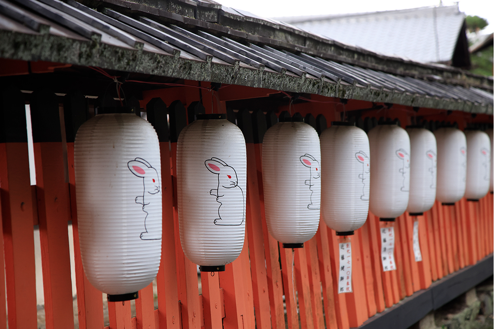
Каждый октябрь на празднике чая Удзи настоятель святилища проводит обряд: черпает воду из знаменитого источника.
Святилище Удзи
- Адрес
- префектура Киото, Удзи, Удзи-Ямада, 1
- Телефон
- +81 774-21-3041
- Часы работы
- территория открыта всегда
- Цены / Вход
- бесплатно
- Сайт
- uji-jinja.com
Обед
TATSUMIYA: маття вместо приправы
Выпить маття можно во многих местах, а вот попробовать блюда из маття почти негде. TATSUMIYA одно из таких редких мест. Дом открылся в 1840 году как оптовая чайная лавка, а в 1913 году стал рестораном. Опыт чайного торговца здесь пустили в кухню: повара используют пять разных сортов маття.
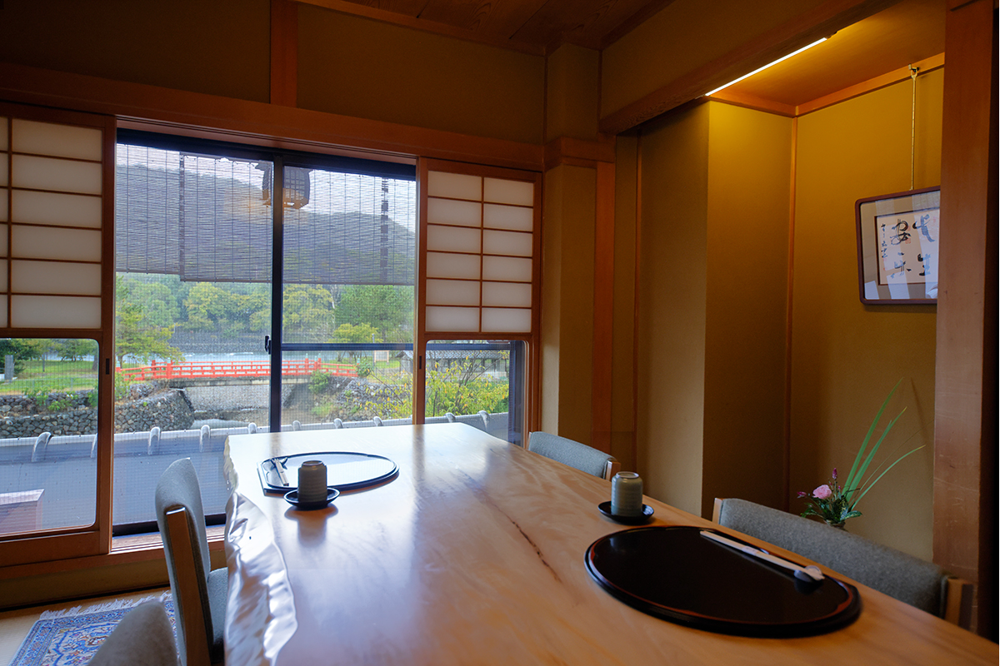
Днём на берегу реки подают обеденный курс из маття. Свежая юба с крабом в соусе из маття, тофу из маття, стебли таро с маття и кунжутом: сезонные продукты и маття сходятся в каждом блюде. Есть маття не в десерте, а как часть еды непривычно, и это открытие стоит поездки.
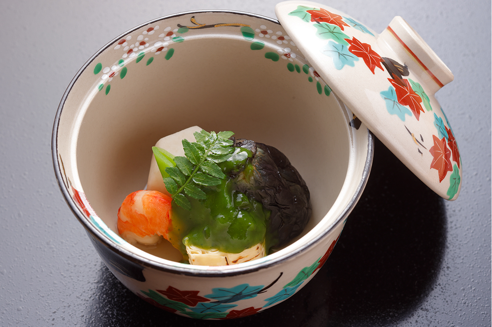
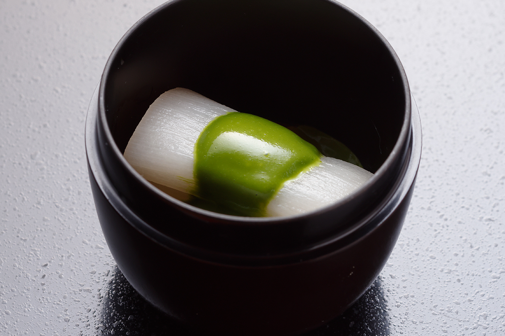
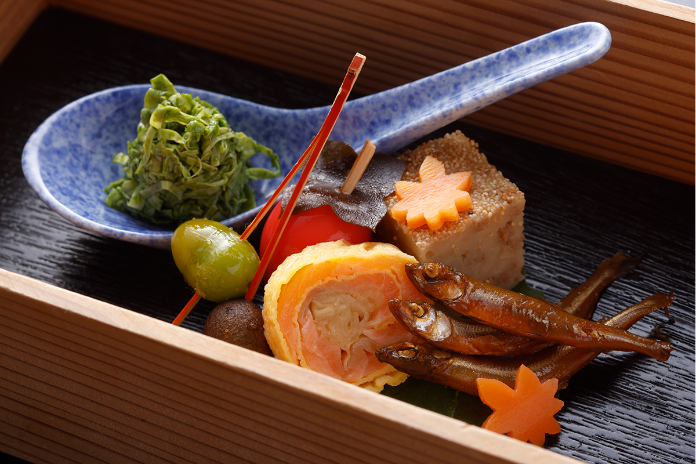
Чай, выросший на земле, где когда-то построили рай на земле, кажется здесь настоящим нектаром.
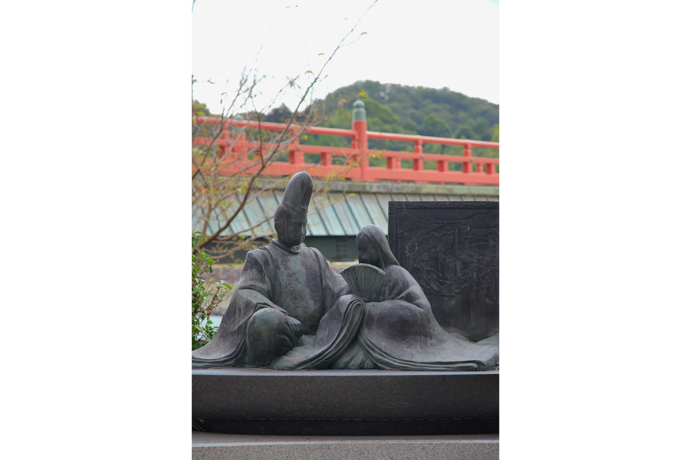
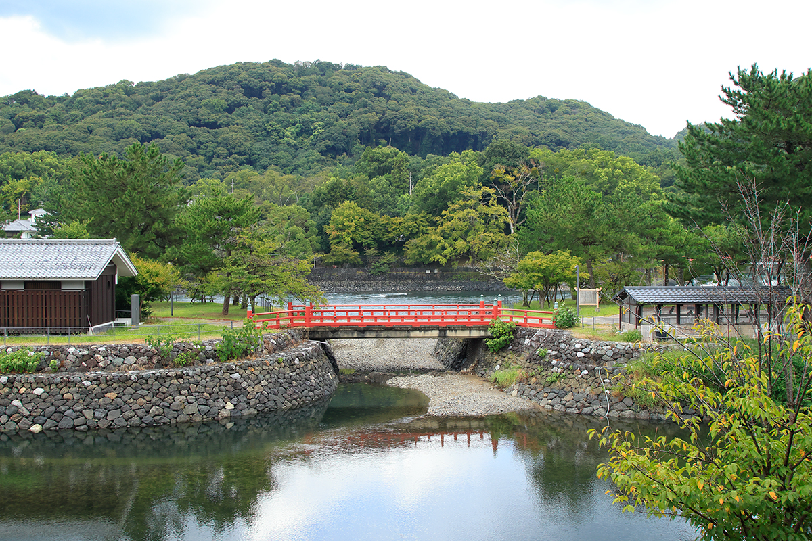
TATSUMIYA
- Адрес
- префектура Киото, Удзи, Удзи-Тонокава, 3-7
- Телефон
- +81 774-21-3131
- Часы работы
- 11:00–15:00 (последний заказ в 14:30), 17:00–22:00 (последний заказ в 19:30), вечером только по предварительной записи
- Выходные
- нерегулярно
- Цены / Вход
- днём курсы, вечером кайсэки из маття
Фото: Кацуо Такасима; храм Бёдо-ин.